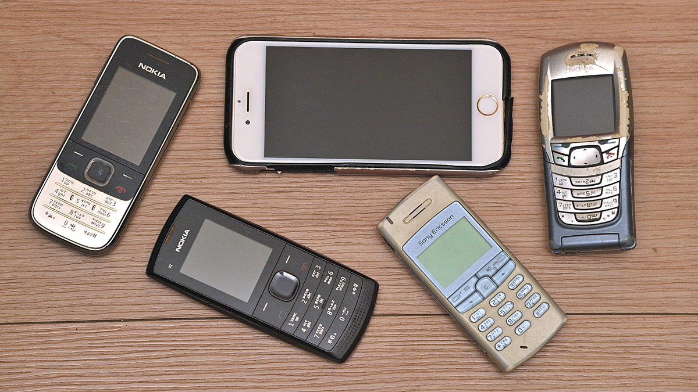
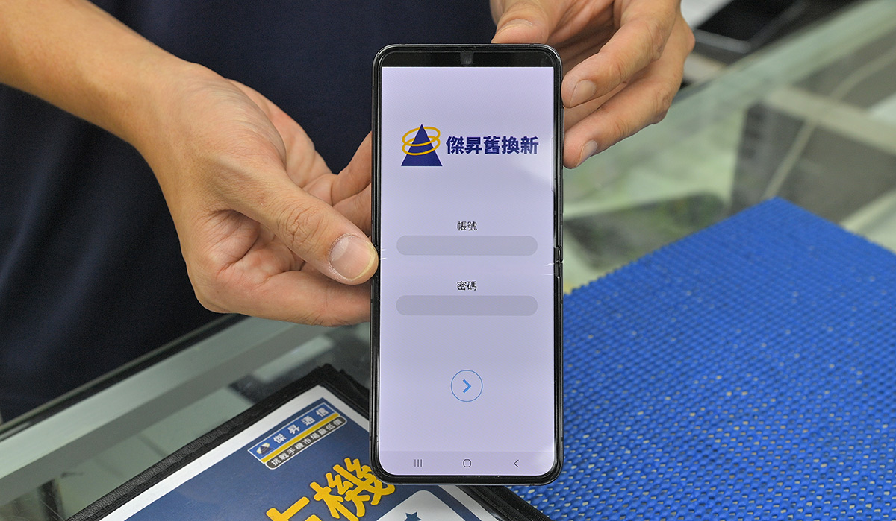
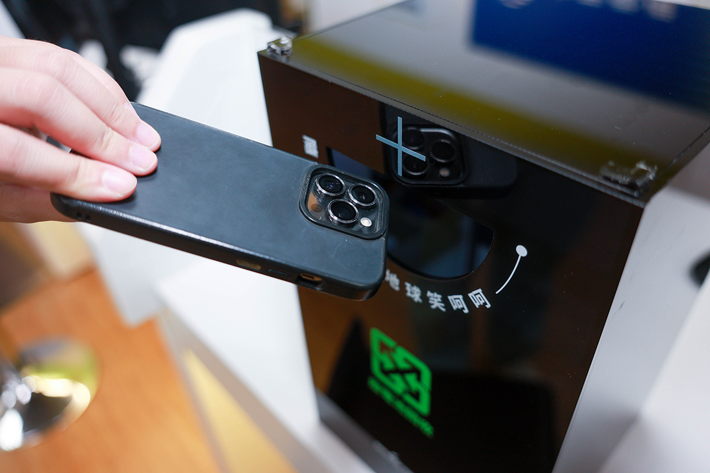
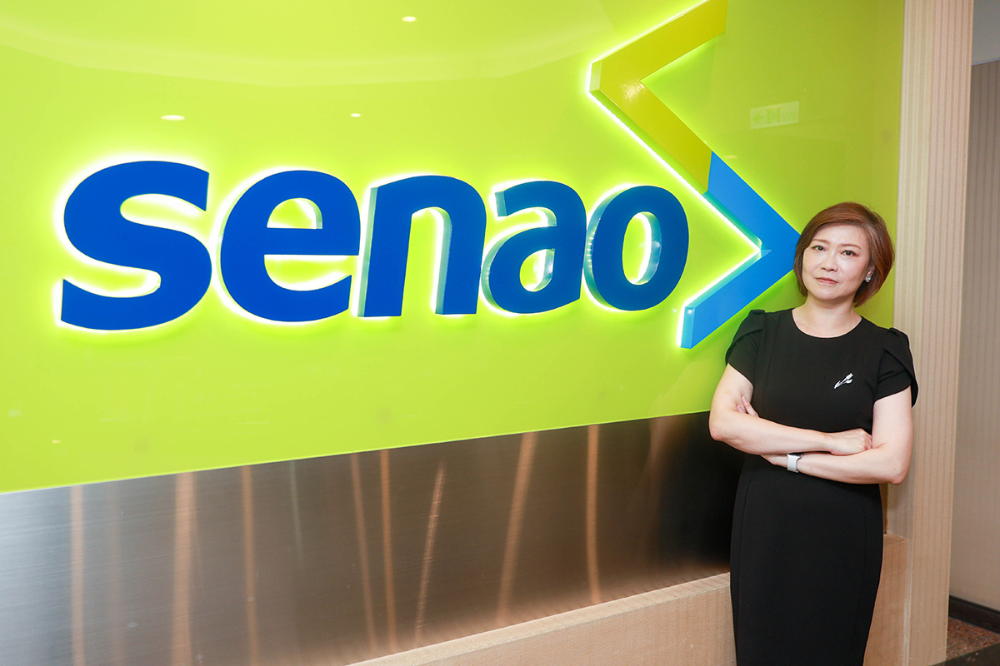
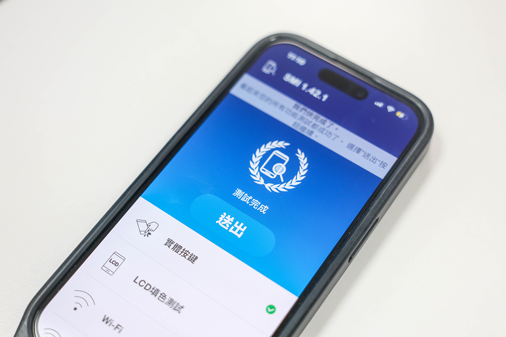
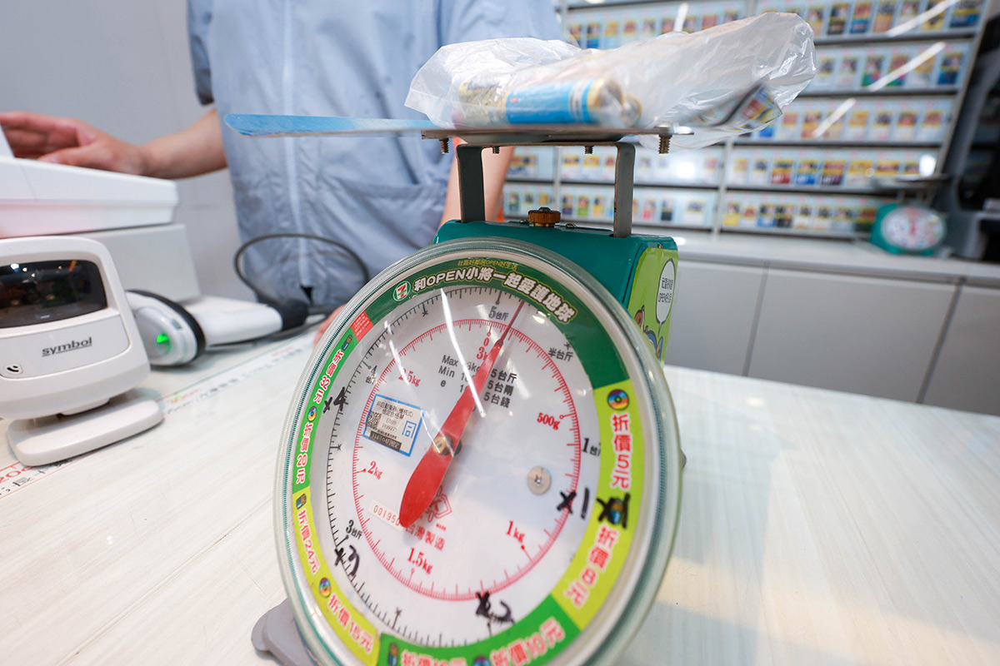
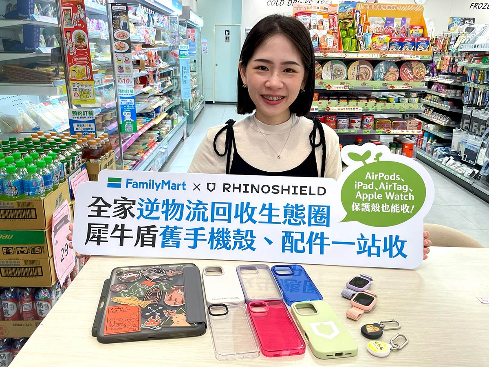

▲ 傑昇通信舊機現場估價，高價現金回收。（圖／胡瑞麒攝）
◎ 報導／陳詩璧
◎ 攝影／胡瑞麒・華子琛
◎ 圖片來源／全家
◎ 發布日期／2026.08.20

家裡閒置的廢3C有哪些？電池、光碟還是十幾年沒開機的手機？這些都是可以回收的。全台統一超商從2010年開始收廢電池跟光碟片，近五年累積送出五千萬購物抵用金，全家便利商店異業合作連手機殼也回收，神腦國際收舊機再給新生命，二手機享有半年保固。傑昇通信就像是社區型的3C回收站，從Nokia3310到最新的Apple iPhone手機皆回收，高價現金回收，估多少拿多少，同時再送一串衛生紙和1千元配件購物金。
許多民眾習慣將舊手機當作「備用機」留存，但常放至電池膨脹、漏液甚至無法開機。傑昇通信襄理林季蓉分析，隨著旗艦手機單價攀升，民眾消費觀念逐漸轉變，每年9月至12 月的iPhone新機發表季會迎來回收高峰，不少人選擇將備用機拿出來估價折抵新機，以降低購機負擔。民眾早年習慣換現金，近年以折舊為主，先把舊機高價回收兌現，門號續約，再搭配件抵用金1,000元變成三重折扣一次享用。

▲ 傑昇通信設計app舊換新估價，10分鐘內完成估價。（圖／胡瑞麒攝）
相較於部分管道僅限換購特定品牌，傑昇通信提供「高價現金回收」的彈性機制，現場透過 APP 精準估價「估多少、拿多少」，再送衛生紙一串和配件抵用金1,000元享有多重折抵，吸引許多民眾拿出現役甚至年代久遠的海豚機或 Nokia 3310等舊手機。
舊手機在回收後的處理上，約7到8成功能良好的二手機經整理後重新投入二手市場；無法開機的報廢機雖然沒有殘值，傑昇通信仍會提供民眾配件抵用金600元當作獎勵，後續再交由合規拆解廠提煉稀貴金屬並妥善處理有毒物質。
▲ 傑昇通信舊機現場估價，高價現金回收。（圖／胡瑞麒攝）
林季蓉說只要民眾願意回收，還是會鼓勵把手機拿出來。門市端曾經收過最誇張的案件是電池都爆開的，當時民眾突然可能抽屜打開或聽到聲音時，才發現狀況不對。傑昇通信則是在回收時同時宣導，讓民眾知道了解電池是有毒物品。
作為中華電信子公司的神腦國際，則結合電信續約優惠（提供舊換新最高2,000元補助），建立透明且規格化的二手機認證制度。神腦國際執行副總經理鄭妍妍表示，2023年神腦的回收量相較2022年成長35.6%，其中iPhone手機因殘值高占回收總量高達七成，其次為三星與陸系品牌。

▲ 神腦國際門市設置3C回收箱，超過10年以上的手機會直接進回收箱回收。（圖／華子琛攝）

▲ 神腦國際執行副總經理鄭妍妍表示，神腦所販售的二手機都有保固半年的服務，這是業界所沒有的服務。（圖／華子琛攝）
神腦透過全台門市提供舊機回收、舊換新、二手機販售等服務，二手機部分是由專業原廠工程師進行包含螢幕、電池、晶片等高達280項以上的精密檢測與整修，並提供業界罕見的半年保固；次級機則統一集中外銷海外，延長其生命周期。
為落實減碳，神腦實施無紙化與包材減量，僅採用原廠紙盒寄送。同時，考量手機使用年限拉長，神腦與美國廠商合作開發健檢APP，於全台門市今年六月起提供會員免費手機健檢，鼓勵民眾「電池壞了換新電池」的作法，讓手機順利延長2至3年的使用壽命。

▲ 神腦國際今年6月起提供給會員免費手機健檢服務。（圖／華子琛攝）
針對廢3C議題，主管機關與民間團體也提出了更前瞻的思考：
● 環境部資源循環署永消二科科長吳筱婷強調，智慧型手機零件多含有台灣缺乏的稀貴金屬，輕易廢棄是極大浪費。環境部盼品牌商善盡「生產者延伸責任」，建立不限自家品牌的「逆向回收機制」，發揮「城市採礦」精神。以iPhone為例，其永續報告顯示新機使用回收材料比率已達 20% 以上，正積極探詢市場對於循環產品的接受度。
● 主婦聯盟環境保護基金會執行長吳碧霜指出，高額價格折抵與便利的回收據點是誘發民眾清出閒置手機的兩大關鍵。她呼籲 3C 廠商在設計前端就應融入「綠色思維」，朝向「壞哪裡、修哪裡」的模組化設計發展，從源頭延長產品壽命，實現真正的資源永續循環。
便利商店是民眾落實日常回收的最前線。統一超商自2010年起導入廢電池與光碟片回收機制，2012 年起陸續擴大至廢筆電每台折抵120元，廢手機每支折抵12元及充電器等品項。統計2021年至2025年間，統一超商已累計發出高達5,000萬元購物抵用金，其中廢電池為回收量最大宗。為確保安全，統一超商也規範鋰電池與鈕扣電池須以膠帶絕緣，若有變形或膨脹則退還不予回收。

▲ 統一超商統計，3C回收最大宗是舊電池，一公斤換16元購物抵用金。（圖／華子琛攝）
全家便利商店則善用其「逆向物流」系統，當物流車完成門市配送後，返程順道將廢乾電池、手機、平板、筆記型電腦及行動電源載回物流中心，再交由合格業者進行拆解、精煉，讓金屬與塑膠重獲新生。此外，全家亦與犀牛盾合作推出「舊手機殼回收」服務，讓保護殼與周邊配件，例如 AirPods、Apple Watch 保護殼等，清潔乾淨，並使用舊紙盒或破壞袋妥善包裝，透過店到店送至合作夥伴進行再生處理，也能再製為循環產品，降低一次性塑膠廢棄物。

▲ 全家與犀牛盾合作推出舊手機殼回收服務。（圖／全家提供）


新聞部
副總經理 王結玲
陳致中・陳詩璧・胡瑞麒・華子琛・談雍雍・吳家瑜
節目部
T觀點／莊開文・吳家瑋・莊秀惠・趙昱涵
數位事業部
總監 郭瀧億
內容策展組／廖玉貞・彭嘉儀・林佳瑤・李佳綺
ESG永續發展部
賴盈文・蔣成偉・張玲玲・黎育如・徐新瑜

© TVBS Media Inc. All Rights Reserved｜聯利媒體股份有限公司